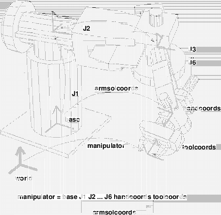

Next: システム概要 Up: MARS: マルチ自律ロボットシミュレータ Previous: MARS: マルチ自律ロボットシミュレータ Contents Index
このディレクトリからeusxを呼び出す。 すべてのファイルが自動的にロードされ、シミュレータが動作し始める。 windowがオープンされ、初期メッセージが下部windowに現れるまで待つこと。
例:
Try "SYSTEM"->"Load" menu. Load "example.bbs". And "SCL"->"On" menu.
注意:
SCL"Off" シミュレーションは一時停止するが、GUI処理は続行される。
SYSTEM"Quit" 最上位のループから抜ける。(mars-loop)により再開できる。
SYSTEM"Save" 現在の状態をファイルにセーブする。
SYSTEM"All-Clear" すべてを消し、システムを初期化する。
SYSTEM"Reset" ロボットの内部状態をリセットするために使用する(特殊目的)。